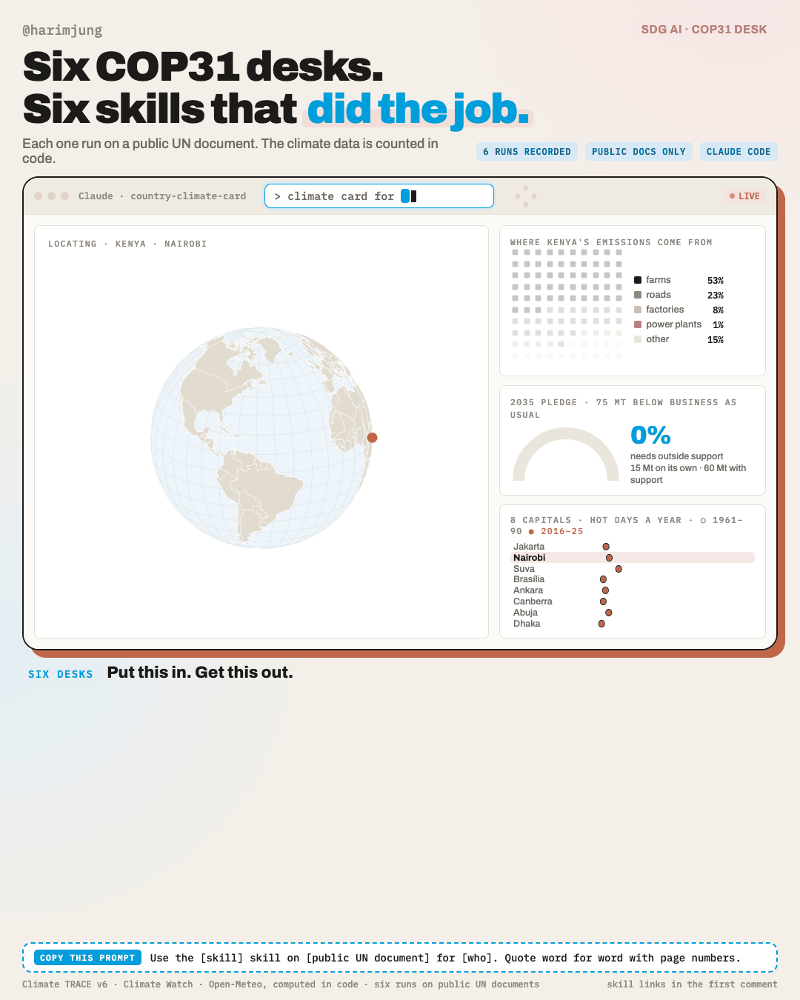
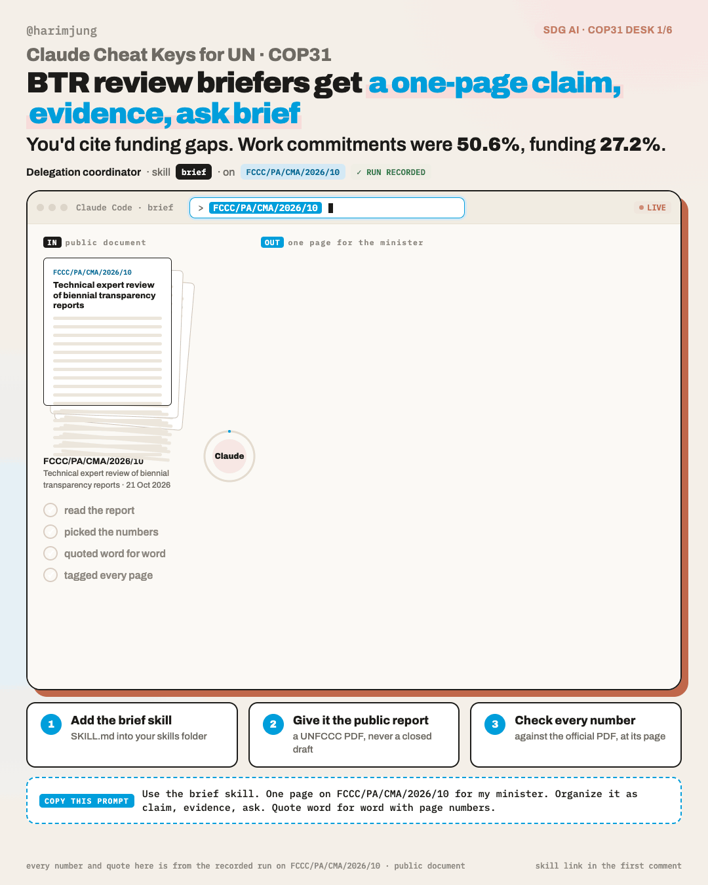
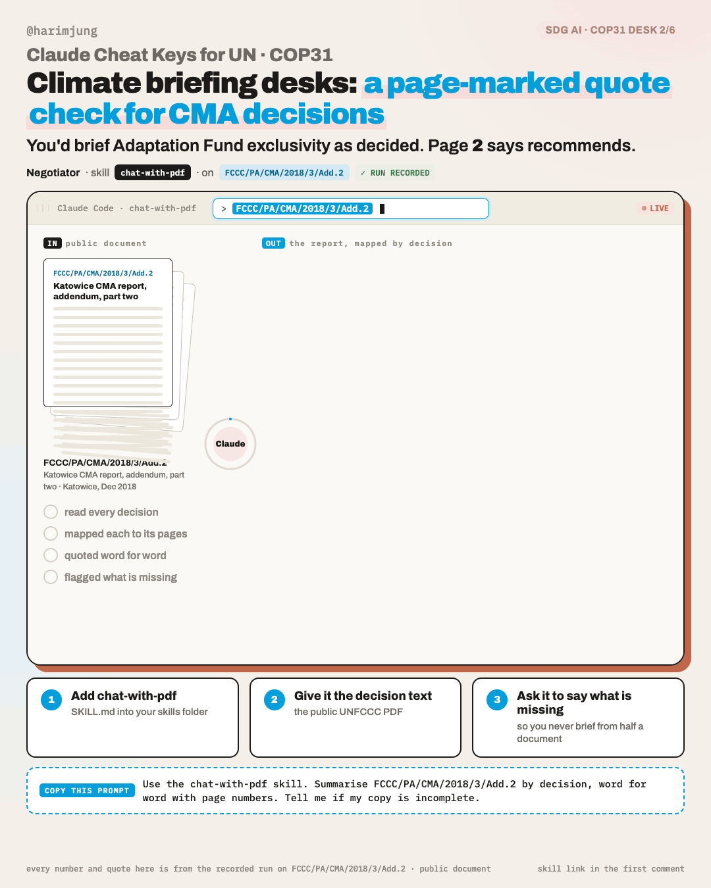
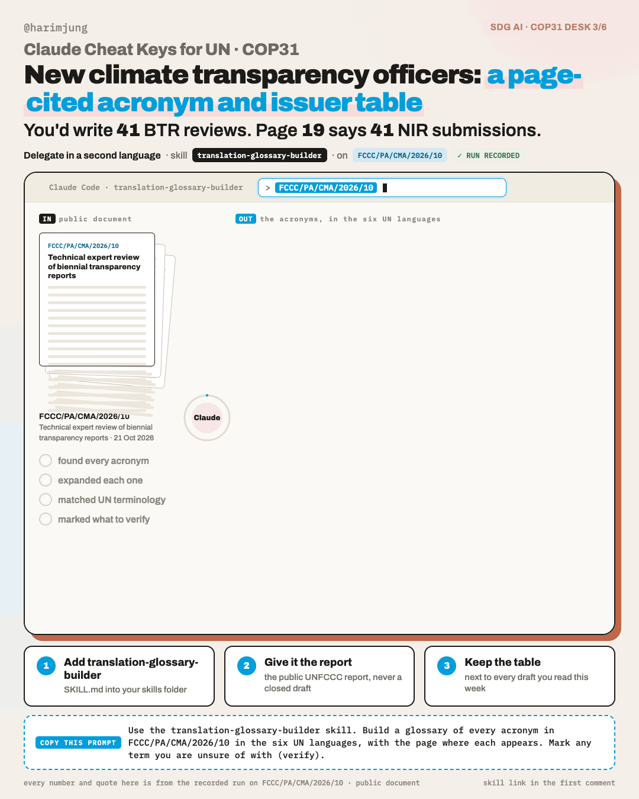
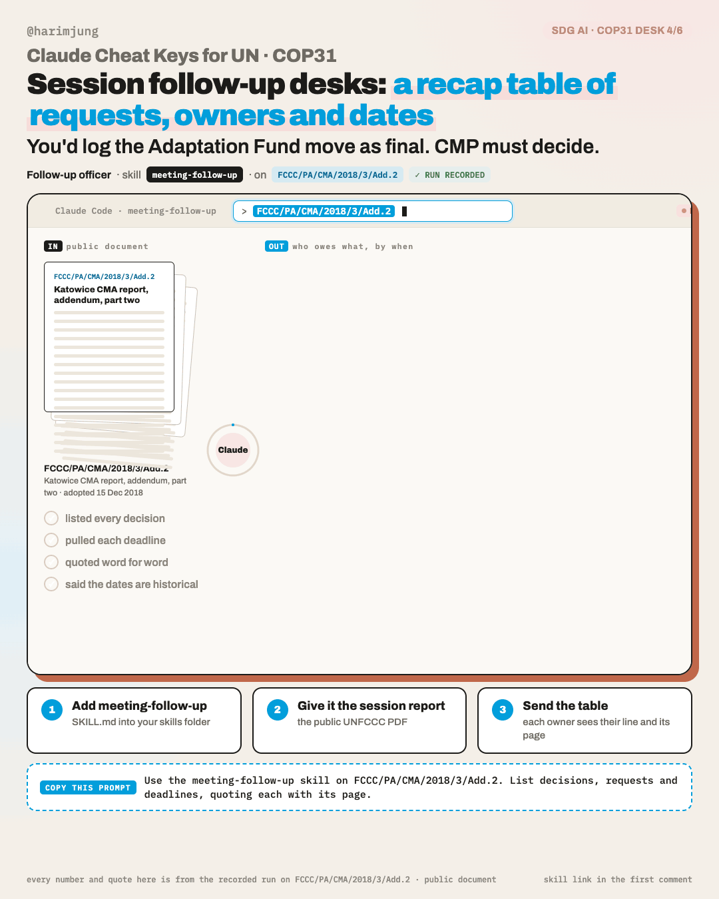
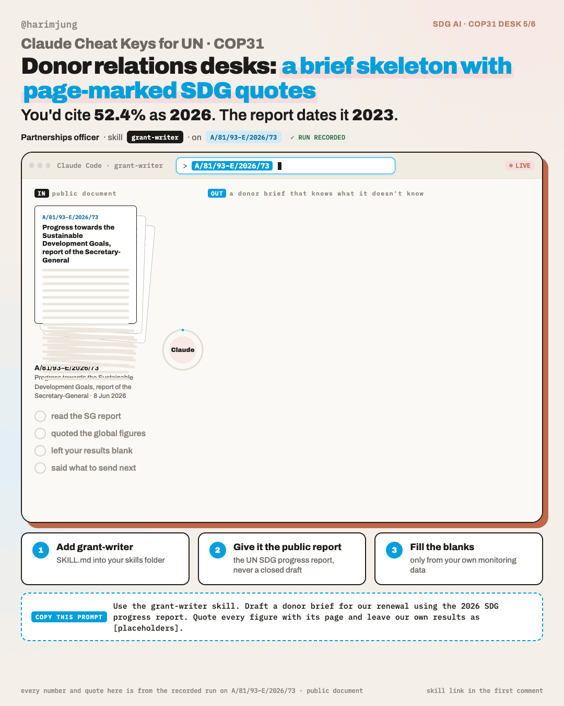

Claude Cheat Keys for UN · COP31
One sheet for each COP31 desk job. Each one shows what came back when I gave Claude a public UN document and one skill, the exact way to ask, and the check you still do yourself.
A country climate dashboard, then six desks

From the public UN document Open-Meteo · Climate TRACE:
Copy this
Make a climate card for Kenya.
Public UN documents only. Never paste a closed draft, informal notes or anything marked restricted.
One page for the minister

From the public UN document FCCC/PA/CMA/2026/10: Technical expert review of biennial transparency reports
Copy this
Use the brief skill. One page on FCCC/PA/CMA/2026/10 for my minister. Organize it as claim, evidence, ask. Quote word for word with page numbers.
Public UN documents only. Never paste a closed draft, informal notes or anything marked restricted.
The report, mapped by decision

From the public UN document FCCC/PA/CMA/2018/3/Add.2: Katowice CMA report, addendum, part two
Copy this
Use the chat-with-pdf skill. Summarise FCCC/PA/CMA/2018/3/Add.2 by decision, word for word with page numbers. Tell me if my copy is incomplete.
Public UN documents only. Never paste a closed draft, informal notes or anything marked restricted.
The acronyms, in the six UN languages

From the public UN document FCCC/PA/CMA/2026/10: Technical expert review of biennial transparency reports
Copy this
Use the translation-glossary-builder skill. Build a glossary of every acronym in FCCC/PA/CMA/2026/10 in the six UN languages, with the page where each appears. Mark any term you are unsure of with (verify).
Public UN documents only. Never paste a closed draft, informal notes or anything marked restricted.
Who owes what, by when

From the public UN document FCCC/PA/CMA/2018/3/Add.2: Katowice CMA report, addendum, part two
Copy this
Use the meeting-follow-up skill on FCCC/PA/CMA/2018/3/Add.2. List decisions, requests and deadlines, quoting each with its page.
Public UN documents only. Never paste a closed draft, informal notes or anything marked restricted.
A donor brief that knows what it doesn't know

From the public UN document A/81/93–E/2026/73: Progress towards the Sustainable Development Goals, report of the Secretary-General
Copy this
Use the grant-writer skill. Draft a donor brief for our renewal using the 2026 SDG progress report. Quote every figure with its page and leave our own results as [placeholders].
Public UN documents only. Never paste a closed draft, informal notes or anything marked restricted.